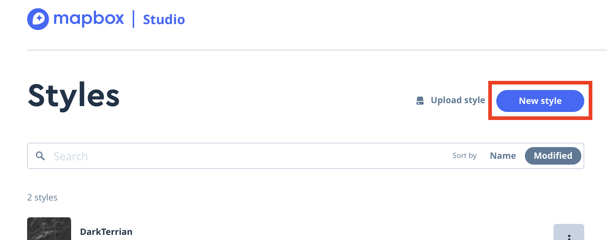
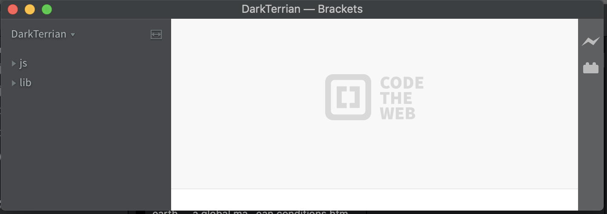

Objective
In this lab, you will make something similar to the map above. We will use web mapping technologies, Mapbox, Leaflet, and GitHub. Mapbox is a provider of custom online maps for websites and applications such as Foursquare, Facebook, and The Weather Channel. Leaflet is a widely-used open-source JavaScript library used to build web mapping applications. GitHub provides hosting for software development version control using Git. What is nice about these technologies is that they are highly customizable and can give you a platform to develop online webmaps.
Making a style on 
- Go to Mapbox website - https://www.mapbox.com/
- Sign up for a new account. If you can't find a link here you go - Sign Up Here!
- Choose the 'Pay as you Go' plan. This will give you the free tier and plenty of loads to learn how to use MapBox.
- Once you are signed up and logged in, go to the MapBox Studio to start design your own custom basemap. https://studio.mapbox.com/
- In the studio prompt click on 'new style'
- 
- Choose a template, I choose 'Dark' for this lab, but spice it up select whichever one you want.
- Once you select the base template, you want to start with click on 'customize template' to get into MapBox Studio
- This part you need to experiment with and have fun. As you can see from the Table of Contents, that each layer is there and you can click on them to open a panel customize them. You can change fonts, colors, line weights, etc. If you click on a title of the layer, you can drag them to rearrange drawing order. You can also select a layer and delete them. As for me, I am going to add a layer to the mix, the terrain layer, and mix it in with the default dark template to make 'Dark Terrian'.
- To add a new layer click the 'add layer' button
- A panel will popup. I am going to choose to add Terrian (RBG encoded DEM)
- This will add the layer to the top of the table of contents.
- Drag the layer down in the drawing order so the roads and labels will draw over it. Be sure to click out of the panel to see the result.
- Once you are done modifying your Mapbox Style, it is time to publish it. Click the Publish button to put it on the production server and have it ready for your use.
- You should get a prompt saying you have succesfully published your style.
- Now click the share button. This will give you two essential pieces of information that you will use afterwards during coding, Your Style URL and access token. For now, keep access to this information on hand.
Start Developing with 
- For the web development part of this lab, I am going to work in Brackets. Brackets is a source code editor with a primary focus on web development. Created by Adobe Systems, it is free and open-source software. You can use any development platform or text editor to do this lab. If you are interested in downloading and installing Brackets, go to this site - http://brackets.io/
- To start developing, you will need to make a local folder to work in. This folder can be located anywhere on your computer. I named my folder DarkTerrain.
- Under that folder make two more folders, one called 'lib' and the other 'js' . The lib folder will be your library folder where you will put files that you will refer to run your site. The js folder is where you will put your javascript files that you will develop in.
- In the lib folder, you will need to add the Leaflet libraries and stylesheets. Got to https://leafletjs.com/download.html and download the latest stable version. Extract the contents of the folder into your lib folder.
- Now you are ready to start up brackets. Open brackets and then choose File>Open Folder . Navigate to your Project folder. Remember I named mine DarkTerrian. When you open the folder you will see the sidebar now has your folders name and the js and lib folders.
- 
- You will need to make two files to develop, the index.html file and the main.js. Let's start with the html. Click on File>New. This will make a new page where you can start coding. Save this file as index.html in the root of your project folder
- Now you will add in boilerplate code, this is just that basic structure of html. You will modify and add code to this to make your map.
1 2 3 4 5 6 7 8 9 10 11 12 13 14 15 16 17 18 19 20
<!DOCTYPE html> <html lang="en"> <head> <meta charset="utf-8"> <meta name="viewport" content="width=device-width"> <title></title> <!--put your external stylesheet links here--> </head> <body> <!--put your initial page content here--> <!--put your external script links here--> </body> </html>
- Practice modifying the code by adding the title of your page in line 6 of the head section. The title will go between the title tags.
- Before writing any mapping code for the map, you need to include Leaflet CSS file in the head section of your document. Put it at line 9 in the head section of the code.
<link rel="stylesheet"href= "lib/leaflet.css">
- On the next line (line 10) in the header include Leaflet JavaScript file, note this must be after Leaflet’s CSS
<script src ="lib/leaflet-src.js"> </script>
- We need one final js library to get everything working. jQuery is a JavaScript library that helps with the HTML DOM tree traversal and manipulation, event handling, CSS animation, and Ajax. For this library, we will use a google hosted library instead of including it our folder. Add this line of code to line 11 to do this.
<script src="https://ajax.googleapis.com/ajax/libs/jquery/3.4.0/jquery.min.js"></script>
- Now we need to put a div element with a specific id in the body section of the code. This is where you want your map to be on our page.Add this line of code where the boilerplate code says 'put your initial page content here'
<div id="map" style="width: 100%; height:700px;"></div>
- This is where people get a little confused, but what we are doing is making a div with an id of 'map'. Later we will make a javascript file that creates the map. This div line of code calls that script to create the map. We are also including inline style to set the size of the div.
- Now we need to add a link our main javascript file where we will be coding the map. We have not made this file yet, but we will in the next step, so right now you are linking to nothing. Add this line of code where the boilerplate code says 'put your external script links here'
<script src ="js/main.js"></script>
- Now you need to save the file. Verifty that it is named index.html and it is in the root folder for your project.
- Here is mine if you want to compare with me.
1 2 3 4 5 6 7 8 9 10 11 12 13 14 15 16 17 18 19 20 21 22 23
<!DOCTYPE html> <html lang="en"> <head> <meta charset="utf-8"> <meta name="viewport" content="width=device-width"> <title>Dark Terrian</title> <!--put your external stylesheet links here--> <link rel="stylesheet" href="lib/leaflet.css"> <script src ="lib/leaflet-src.js"> </script> <script src="https://ajax.googleapis.com/ajax/libs/jquery/3.4.0/jquery.min.js"></script> </head> <body> <!--put your initial page content here--> <div id="map" style="width: 100%; height:700px;"></div> <!--put your external script links here--> <script src ="js/main.js"></script> </body> </html>
- Now it is time to code. Click File>New . This will bring up a blank document. Save this file to your js folder, name it main.js.
- Let’s create a map of Morocco with our custom MapBox tile tiles. To do this, we will use this following Boilerplate javascript cade. Copy and paste this code into your main.js file.
1 2 3 4 5 6 7 8 9 10 11 12 13 14 15 16 17 18 19 20 21 22 23 24 25 26 27 28 29 30 31 32
//function to start the Leaflet map function createMap(){ //Varibles for attribution box on the map. var mbAttr = '<a href="http://openstreetmap.org">OpenStreetMap</a> |' +' <a href="http://mapbox.com">Mapbox</a>'; //You can add you name to the variable if you want to add yourself to the credits. //Variable for storing your Mapbox API Token var apitoken = 'Your Token' //Enter your API Token - go to 'https://www.mapbox.com/install/' to yours */ //URL used for Stanard MaxBox Styles var mbUrl = 'https://api.tiles.mapbox.com/v4/{id}/{z}/{x}/{y}.png?access_token={token}'; //URL used for Custom MapBox Style var mbStyleUrl = 'https://api.mapbox.com/styles/v1/{id}/tiles/256/{z}/{x}/{y}?access_token={token}'; s //For Custome basemaps - Replace your username and StyleID var customeBasemap = L.tileLayer(mbStyleUrl, {id: 'MapBoxUserName/StyleId', token: apitoken, attribution: mbAttr}); //For MabBox Standard Basemaps var standardBasemap = L.tileLayer(mbUrl, {id: 'mapbox.light', token: apitoken, attribution: mbAttr}); //create the map*/ var map = L.map('map', { center: [31.00, -5],//Coordinated to center the map zoom: 6, //zoom level layers:customeBasemap //basemap }); }; //calling the funcation $(document).ready(createMap);
- There are two parts to this code. The top part is a javascript function named createMap. A JavaScript function is a block of code designed to perform a particular task. In this case, this function will create the map. The second part of this code is the last line. The code inside the createMap function will execute when that last line invokes (calls) the function.
- As for the function itself, it is broken up into variables that you will edit. These variable are then used to construct the tile layer to add to our map. Afterward, these variables will be used to create the map.
- First, on Line 8 enter your API Token. If you do not have it on hand go to go to https://www.mapbox.com/install/ to copy it from MapBox.
- Then you will notice, there are two different styles of URLs, one is for using standard predefined Mapbox tile layers, the other is for custom layers. Creating a tile layer usually involves setting the URL template for the tile images, the attribution text, and the API token. In the Mapbox standard tiles sets, we have the mapbox.light, but there are many other standard sets you can choose from. Go here to see the other. https://www.mapbox.com/maps/light-dark/
- Now you are ready to put in your custom tileset information. On line 17 you will want to add in the last part of the URL you made earlier in MapBox Studio. If you don't have it from earlier go back to https://studio.mapbox.com/ click on your tileset, click the share button and you will find it there. Mine was 'mapbox://styles/sounny/cjy6np5ld1sjg1cme97n3yosk'. For the Id variable in the code I would put just 'sounny/cjy6np5ld1sjg1cme97n3yosk', leaving off the 'mapbox://styles/' part of the code.
- Finally you can chose your geographical coordinates and a zoom level:
- Click save to your file, you are now ready to preview you map. To start Live Preview do one of the following in Brackets:
- Click the lightning bolt icon in the top right of the window.
- Select File > Live Preview.
- Press Command+Alt+P (Mac) or Ctrl+Alt+P (Windows or Linux).
- If everything is done correctly, you should see your map. If not, you will have to go back and troubleshoot your code. Looks for possible typos or errors in both the Html and js files you made. You should not change anything with the libraries you imported.
- Now you should have some fun with the map. Check out the Leaflet docs and see what else you can do with the map. https://leafletjs.com/reference.html
//create the basemap control layer*/ var baseLayers = { "Standard": standardBasemap, "Custom": customeBasemap }; L.control.layers(baseLayers).addTo(map);
- I am going to add a tileset switcher to the map. https://leafletjs.com/reference.html#control-layers
- Challange yourself. See what you can do.
- Here is my final main.js to compare to
1 2 3 4 5 6 7 8 9 10 11 12 13 14 15 16 17 18 19 20 21 22 23 24 25 26 27 28 29 30 31 32 33 34 35 36 37 38 39 40 41 42 43 44
//function to start the Leaflet map function createMap(){ //Varibles needed for running the funcation var mbAttr = '<a href="http://openstreetmap.org">OpenStreetMap</a> |' +' <a href="http://mapbox.com">Mapbox</a> | <a href="https://sounny.github.io/">Sounny Slitine</a>'; var apitoken = 'pk.eyJ1Ijoic291bm55IiwiYSI6ImNqcGRpaGVhbzAwaWsza24wbnhtMnR6NnQifQ.J3MAaLF0GbWo8hWP2MKtsw' //Enter your API Token - go to 'https://www.mapbox.com/install/' to yours */ var mbUrl = 'https://api.tiles.mapbox.com/v4/{id}/{z}/{x}/{y}.png?access_token={token}'; //URL used for Stanard MaxBox Styles var mbStyleUrl = 'https://api.mapbox.com/styles/v1/{id}/tiles/256/{z}/{x}/{y}?access_token={token}'; //URL used for Custom MapBox Styles //Variables for the different basemaps var darkTerrain = L.tileLayer(mbStyleUrl, {id: 'sounny/cjy6np5ld1sjg1cme97n3yosk', token: apitoken, attribution: mbAttr}); var grayscale = L.tileLayer(mbUrl, {id: 'mapbox.light', token: apitoken, attribution: mbAttr}); var dark = L.tileLayer(mbUrl, {id: 'mapbox.dark', token: apitoken, attribution: mbAttr}); var outdoors = L.tileLayer(mbUrl, {id: 'mapbox.outdoors', token: apitoken, attribution: mbAttr}); //create the map*/ var map = L.map('map', { center: [31.00, -5],//Coordinated to center the map zoom: 6, //zoom level layers:darkTerrain //default base }); //create the basemap control layer*/ var baseLayers = { "Outdoors": outdoors, "Grayscale": grayscale, "Darkscale": dark, "Dark Terrain": darkTerrain }; L.control.layers(baseLayers).addTo(map); }; //calling the funcation $(document).ready(createMap);
Make your Map live on 
- GitHub is not only a great place to store and share your code with others but they also offer free web hosting of your HTML, CSS, and JavaScript projects!
- First thing’s first: get yourself a GitHub account!https://github.com/join
- Download and install the GitHub Desktop app. https://desktop.github.com/ This is the app that we’ll use to get our code up on GitHub. Open the downloaded application file and continue through the installation process as required with your computer’s operating system.
- Before we upload our code to GitHub we first need to make GitHub Desktop aware of our project files.
- Open up the GitHub Desktop app and Sign in.
- Then Click the “Create New Repository” button.
- When the “Create a New Repository” dialog window appears, fill in a name for your map. I used DarkTerrian.
- The “Local Path” text input is where your repository will live on your computer; this is not where your website files currently reside on your computer’s hard drive. GitHub Desktop needs to create a new, empty folder.
- We’ll need to copy your site files over later, but for now, select a folder such as /Sites in your home folder. This will create a new folder inside the /Sites folder with the name of your repository.
- Leave all the other options in the form at their default settings and click the “Create Repository” button.
- Copy all your files from the site your made to the new Repository folder
- The Github Desktop app will now see the changes to the folder
- With all our files in the GitHub Repository folder, we’re ready to commit our files! To “commit” files means to take a “snapshot” of the files and folders in their current state. By doing so, we get them ready to be pushed up to a repository on GitHub. Before we commit our files for publishing, we first need to tell GitHub what this commit is all about. Fill in the “Summary” text input, located near the bottom left of the user interface, with a high-level title of what this commit entails; something simple like, “My first commit! 😀” works just fine in this instance. Now click the “Commit to master” button!
- fter clicking the “Commit to master” button in the previous step, you may be wondering: What just happened? My files are gone and the app is empty now! Don’t fret! In the bottom left corner of the GitHub Desktop interface there’s a little indicator that your commit was successful.
- Now that our files are committed, this allows us to push our commit to GitHub! To “push” files means to upload the committed files in their current state to a repository on GitHub. Find and click the “Publish repository” button along the top of the GitHub Desktop interface.
- You will now find the Pusblish window. All the options in the form are fine as-is except the “Keep this code private” checkbox; this needs to be unchecked in order for you to share your site with friends and family.
- Click the “Publish Repository” button to send your files up to GitHub!
- Now, in your browser, go to GitHub.com and find your repository page to make sure your files made the journey to their new home.
- On your repository page, click on the settings and scroll to your GitHub Pages setting. Choose the setting for Source and select Master Branch.
- You will now see your URL for you webmap
- Open the URL in your browser and see your map live online.